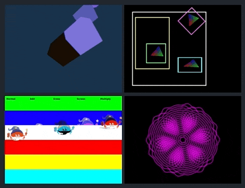

This Month in Rust GameDev #37 - August 2022
Welcome to the 37th issue of the Rust GameDev Workgroup's monthly newsletter. Rust is a systems language pursuing the trifecta: safety, concurrency, and speed. These goals are well-aligned with game development. We hope to build an inviting ecosystem for anyone wishing to use Rust in their development process! Want to get involved? Join the Rust GameDev working group!
You can follow the newsletter creation process by watching the coordination issues. Want something mentioned in the next newsletter? Send us a pull request. Feel free to send PRs about your own projects!
Announcements
Bevy Jam #2
Voting on Bevy Jam #2 just finished! It was a 10 day event, where the goal was to make a game in Bevy Engine, the free and open-source game engine built in Rust. The theme was 'Combine'.
The full results can be found on itch.io. There were 404 participants, 85 submissions, and 2,674 ratings, making it the biggest Bevy Jam yet! (And maybe the biggest Rust game jam ever?)
Here are the top five games:
🥇 First Place: USA Football League Scouting Combine XLV
USA Football League Scouting Combine XLV is a game where you take part in the historic unveiling of the "Combine Combine" event at this year's USA Football League Scouting Combine!
USAFLSCXLV is singleplayer action game where you attempt to score as many touchdowns as you can while avoiding professional football players, navigating a corn maze and also avoiding a combine machine harvesting the maze.
The source for the game is available on GitHub.
🥈 Second Place: Loot Goblin

Loot Goblin is a game where you craft your way to victory in a unique adventurer's backpack simulation!
We're going dungeon crawling, but all the hard work is done for you by the valiant Sir Hoardalot, and you, as his resourcesful Loot Goblin are going to keep his backpack in order! Craft potions and weapons to strengthen the hero, and help kill the evil Ogre Necromancer.
The source code for the game is available on Github.
🥉 Third Place: Shanty Quest: Treble at Sea
In Shanty Quest: Treble at Sea, you combine the magical instruments and become the Pirate King!
The source code is available on GitHub.
Fourth Place: Combobox
Combobox is a game where you navigate through space with a tiny robot combining boxes with unique features!
The source code is available on GitHub.
Fifth Place: Mole Rancher
Mole Rancher is a game where you made it through university, got your PhD, and now you have been selected to work in an top secret experimental facility which promises a way to generate infinite energy through the combination of various strange particles.
Use power to generate curious molecules, check their properties in your logbook, monitor their progress through your trusty E-merge device, and try not to let the reactor overheat!
And don't worry about those armed guards on the way in, as long as you meet your quota then you'll have no problems...
The source for this game is available on GitHub.
Rust GameDev Meetup

The 19th Rust Gamedev Meetup took place in August. You can watch the recording of the meetup here on Youtube. Here was the schedule from the meetup:
- RustConf Arcade Cabinet - @carlosupina
- Blue Engine - @aryanpur_elham
- Veloren - @VelorenProject
- Graphite - @GraphiteEditor
- All is Cubes - @switchborg
The meetups take place on the second Saturday every month via the Rust Gamedev Discord server and are also streamed on Twitch.
Bombercrab Challenge Report
Pablo Mansanet shared a report about how the 2022 Tokyo Rust Game Hack went.
Game Updates
Catacomb 2-64k

Catacomb 2-64k is a (completed) experimental project in porting a moderately complex project, first from C to unsafe Rust, then to (fully) safe Rust.
The objective of the project has been to study the tooling, transformations and the overall process required perfom real-world, exact, ports; an article will follow in September on 64kramsystem's blog.
The port uses the Rust-SDL2 bindings. More exact ports of id Software games are expected in the future, with the introduction of a refactoring tool based on the Language Server Protocol/Rust Analyzer.
CyberGate
 The new browser version works exactly like the native version
The new browser version works exactly like the native version
CyberGate (YouTube, Discord) by CyberSoul is a new multiplayer project that aims at procedurally generating distinct universes and gameplay experiences. CyberGate is the name of the main world where universes can be created and accessed by quantum portals.
Recent updates:
- Ported to browser (wgpu with webgl backend)
- Unreliable network protocol achieved with WebRTC
- Dynamically spawn and synchronize ECS components using macros
- Massively improved the events system and actions system
- Refactored over 50% of the project
- Small features such as grabbing objects and dash forward
- Fixed 3 major bugs that slowed down the server
Join the Discord server to participate in upcoming Phase 5.0!
Discussions: /r/rust_gamedev
Rusty Aquarium
Visualize data as a fish tank with Rusty Aquarium
Rusty Aquarium by @ollej is a data visualization tool as a virtual fish tank written in Rust and Macroquad. Different data points control how many fishes are shown, how they move, how fast they swim, and which size they are. It can be used to monitor data in a visual way, while those uninitiated only see a serene fish tank.
Since Macroquad is cross-platform, Rusty Aquarium is available for Windows, Mac, Linux as well as for browsers using WebAssembly.
The aquarium can be controlled in various different ways:
- System monitoring binary to show CPU usage, disk usage, and processes.
- Integrate with Google Sheets to control fishes.
- Back it with an URL that generates a JSON file.
This month, a blog post with the story behind Rusty Aquarium was published on the Agical blog. The code was restructured and the packaged files now contain binaries for input data generation.
Infinite Bunner
Port of the Infinite Bunner game to Rust and Macroquad
Infinite Bunner is a game from the book Code the Classics vol 1 that has been ported by @ollej to Rust and Macroquad from Python and PyGame Zero. It is a modern version of the classic arcade game Frogger with improved graphics and sound.
The game has been sent in to the Rust Game Ports project as an educational example. It shows how to make a 2D game in Macroquad with graphics and sound.
Code the Classics vol 1 is a book from Wireframe Magazine that tells the history of five classic video games. It also includes code listings of modern versions of the games written in Python with the PyGame Zero framework.
Tiny Building Game
The untitled "Tiny Building Game" is a stress-free feel-good game focused on just building something pretty. It is being made by @anastasiaopara and @h3r2tic, who has recently joined the project!
This month, there was a large visual update, which added trees and flowers, as well as fences and gates.
Right now, the team is actively working on setting up a Steam page. Stay tuned by following the newsletter!
Math It
Promotional image of the Math It game
Math It was made with Bevy for the Bevy Jam 2.
The goal of the game is to get as close as possible to the target number and compete with others on a global leaderboard.
Veloren
A barrier of lava
Veloren is an open world, open-source voxel RPG inspired by Dwarf Fortress and Cube World.
In August, long-awaited work on a new internationalization system with Fluent was merged. The real-time simulation v2 system is now in a place, which has allowed for blacksmiths to now sell swords and armour with only a few additional lines of code. Work was done to implement a spectator mode in game, as well as fix a bug about respawning while having a status effect on you persisting, such as being on fire from swimming in lava.
August's full weekly devlogs: "This Week In Veloren...": #183, #184, #185, #186, #187.
Engine Updates
miniquad

miniquad is a pure Rust, cross-platform graphics library.
This month was about polishing miniquad-android experience. To make it easier for regression testing, miniquad got the android playground.
The playground demonstrates all known android shenanigans in one quad-based app.
It includes:
- onscreen keyboard
- java interop (with file dialog as an example)
- dealing with big java services (with bluetooth as an example)
- accessing permissions, both runtime and compile time
Runty8

Runty8 is an experimental port of the Pico8 fantasy console that supports writing games in Rust.
Its current goals are to follow Pico8's APIs as closely as possible, to allow easily porting existing games to Rust, as well as developing new games in a familiar development environment.
The project is in very early stages, and is currently looking for contributors. If you're interested, feel free to read their contributing guide or browse through the open issues.
Gamercade
 Preview of the Audio Editor in Action
Preview of the Audio Editor in Action
Gamercade (Discord, Github) by @RobDavenport is a WASM-powered fantasy console focused on building multiplayer neo-retro games.
Gamercade is preparing for their first alpha release! This includes all the core features needed for a fantasy console and game library: input, graphics, and audio. It also has networked multiplayer, and an editor.
They implemented the in-game sound engine from scratch. They also improved the editor to allow creation of instruments and tracks. It synthesizes sounds at runtime, and produces something like an 80s synth, a 90s SoundBlaster, and a touch of SNES. Songs and Sfx are built using a tracker interface. This video shows a small sample of what it is capable of.
"Wavetables" are great for classic sounds like 8-bit chiptunes or even more complicated sounds. "FM Synth" is a 4-op FM synthesizer. Masters of this technique can produce a huge variety of instruments, effects, and other otherwordly things. "Sampler" rounds out the rest of the system, providing pre-recorded sample playback. Samples can be pitched and played as the desired note.
Come hang out and chat on Discord, where the developers interact with members and post updates daily. The project is open source and looking for contributors, suggestions, as well as awesome game demos.
Tooling Updates
Graphite

Graphite (website, GitHub, Discord, Twitter) is a free, in-development raster and vector 2D graphics editor that will be based around a Rust-powered node graph compositing engine.
August's sprint focused on Bézier shape editing and layer transformation improvements.
- Ahead of the curve: Bézier shapes gain support for curve extension and shape closing using the Pen tool and inserting points along curves with the Path tool.
- Front and center: Layer origins may be set to control the center of rotation and scale using the Transform tool.
Meanwhile, design and architecture work on the Graphene node-based programming language has been well underway. Graphene is the data graph engine that will replace Graphite's tree-based layer system in the next few sprints and evolve into a raster-and-vector render engine over time.
Open the Graphite editor in your browser to give it a try and share your creations with #MadeWithGraphite on Twitter.
Library Updates
hot-lib-reloader

hot-lib-reloader is a development tool that allows you to reload functions of a running Rust program. This allows to do "live programming" where you modify code and immediately see the effects in your running program. Gone are the days of edit-compile-restart loops (to some degree).
hot-lib-reloader works by reloading parts of your application that are defined as dynamic libraries. This approach works on Linux, MacOS, and Windows but has some constraints - see the documentation for details. There are several examples, showing how to create hot-reload setups with various frameworks and libraries, e.g. bevy, egui, and nannou.
bevy_kira_audio
 Configuring a sound when playing it
Configuring a sound when playing it
bevy_kira_audio by @nikl_me is an alternative audio plugin for the Bevy game engine. It uses Kira as its audio library and aims to integrate well with Bevy's ECS.
Last month saw the release of versions 0.11.0 and 0.12.0. With the latest version, sound settings like volume, playback-rate, or panning can be adjusted directly when playing audio. The screenshot above shows the new API with multiple example settings. The plugin now also offers control over single sound instances via asset handles and will apply configurable tweens to most operations.
bevy_asset_loader
 Configuration of a loading state
Configuration of a loading state
bevy_asset_loader by @nikl_me is a plugin for Bevy apps aiming to improve a common pattern for asset-loading. The boilerplate required to set up a loading-state is reduced to a minimum. The plugin is based on storing asset handles in resources, which makes it easy to use them in any system across your app.
The screenshot above shows how a loading state can be added to the Bevy app in the latest version of the plugin. The update also fixed issues with configuring the same loading state in different places of your code and enabled users to define their own dynamic assets.
Notan v0.6

Notan is a simple and portable layer designed to create your own apps on top of it without worrying about platform-specific code.
It provides a set of APIs and tools that can be used to create your project in an ergonomic manner without enforcing any structure or pattern, sharing the same codebase across multiple platforms.
The main focus for version v0.6 was improving how uniforms are set using the layout std140 for the user with a macro, among internal fixes and improvements.
Shipyard
Shipyard is an Entity Component System focused on usability and speed.
This monthh, 0.6 was released with big improvements to workloads and tracking.
The new visualizer is a first step towards visual inspection and interaction with the library. For now it can only show which components are used by which systems and vice-versa.
Learn more about this release in the release post.
Discussions: /r/rust /r/rust_gamedev
Edict
Edict by @zakarumych is powerful Rust ECS crate that expands traditional ECS feature set. The new version 0.2 is getting ready for release. This ECS is based on archetypes for fast cache-friendly iteration. And there are quite a few novel features:
- Edict allows to express relations between entities using
Relationtrait. Relations are linked to a pair of entities - origin and target. This opens a wide range of opportunities to create entity graphs with custom logic. - Custom hooks for components and relations to trigger actions when component is dropped/replaced, or when relation target is dropped.
- Optional
Componenttrait. Edict allows using component types that do not implementComponentwith some restrictions. - Change tracking with flexible queries for modified components suitable for complex use cases. E.g. incremental saves can fetch all components modified since previous save.
- Type-agnostic component borrowing. Component type may define list of types
that can be borrowed from it. Important use case is borrowing
dyn Traits. - Edict supports parallel execution. Built-in scheduler uses systems that
implement
Systemtrait. Functions can be safely transformed into systems similarly tobevy_ecs.
grid_pathfinding
grid_pathfinding is a new pathfinding crate aimed at providing a fast, out-of-the-box system for pathfinding on various types of grids. While the current 0.1.1 release is not very configurable yet, the idea is to make the crate more malleable working towards a 0.2.0 release so that it will support a range of grids (4-connected, 8-connected, weighted, etc.) as well as heuristics. Specifically, grid_pathfinding 0.1 assumes a uniform-cost 8-grid with a Chebyshev cost metric and heuristic. More long-term goals are support for multi-tile and multi-agent pathfinding variants.
The current implementation is based on Jump Point Search with improved pruning rules. On top of this, connected components are used to avoid flood-filling behaviour if no path exists - see the documentation and examples for information on how to manage these components. Especially when simulating many agents in real-time, using components can make a big difference.
Other News
- Other game updates:
- Caveth is a game made with macroquad where you can shoot enemies with a cannon.
- Im-Oab released a free Steam demo of the shump Flesh and also added new enemy types, boss animations, and bullet shadows.
- Spherical Go if the Go game's implementation with a variety of spherical fields.
- Combine and Conquer has a new devlog about 0.10 version that brings vector graphics, "merger" and "splitter" structures, new tech-tree UI, overlay improvements, and new tiers for existing structures.
- bevy-cheeseball is a 3D marble game inspired by Monkey Ball and made with Bevy and Rapier.
- Punchy v0.04 was released, featuring MVP for the first boss enemy, an entirely refactored fighter state model which was written up on the wiki, updates to the enemy AI targeting, camera progression boundaries, updates to debug tools, a health recovery item, and updates to the way attacks are defined and loaded from resources.
- Other learning material updates:
- Console #118 - Interview with Connor of rend3
- PhaestusFox added a bunch of new videos to their "Bevy Basics" YouTube series.
- @fronkongames shared a quick guide to integrating Rust code into Unity.
- @samkevich published a "Learn OpenGL with Rust" series.
- @jack1232 released a "Rust wgpu Graphics Programming Tutorial" YouTube series.
- Other engine updates:
- Fyrox v0.27 features a new Fish Folly game example, compile-time reflection, plugin, and scripting improvements, and two new book chapters about particle systems and terrain.
- Pyxel v0.18's main highlight is the experimental web support.
- Bevy released a blog post about the second birthday of the engine with a retrospective and future plans.
- Other tooling updates:
- @HackerFoo shared a video of a WIP meta-editor to record contact movement to create interactive tutorials for Noumenal.
- nbody-wasm-sim is a WebGPU N-Body astrophysics simulation in Rust + WASM.
- wgen is a simple multi-threaded heightmap generator made with egui and three_d.
- bevy-shell-template is an opinionated, monolithic template for Bevy with cross-platform CI/CD, native + WASM launchers, and managed cross-platform deployment.
- Other library updates:
- bevy_streamdeck is a Bevy plugin to interact with Stream Deck.
- kira v0.7 release brings a bunch of important bug fixes some of which require breaking changes.
- egui v0.19 brings a lot of various small API improvements and optimizations.
- Alex Dixon shared a blog post about creating another linear algebra library - maths-rs.
- fundsp is an audio digital signal processing library for audio processing and synthesis.
- bevy_ecs_tilemap is an ECS-friendly tilemap rendering crate for Bevy.
That's all news for today, thanks for reading!
Want something mentioned in the next newsletter? Send us a pull request.
Also, subscribe to @rust_gamedev on Twitter or /r/rust_gamedev subreddit if you want to receive fresh news!
Discuss this post on: /r/rust_gamedev, Twitter, Discord.